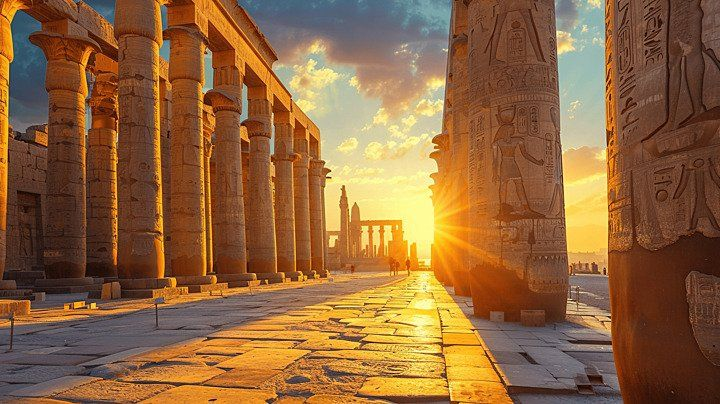

Karnak Temples

The Karnak Temple Complex, located on the East Bank of Luxor, is a vast, open-air archive of architectural evolution that spans over 2,000 years. Development began during the Middle Kingdom and continued heavily through the New Kingdom and into the Ptolemaic period. Unlike most temples built by a single pharaoh, Karnak was a collaborative, multi-generational expansion project, resulting in a sprawling mix of temples, chapels, pylons, and administrative buildings dedicated primarily to the god Amun-Ra. The complex is most famous for the Great Hypostyle Hall, featuring 134 massive sandstone columns arranged in rows. Visitors can also explore the towering obelisks of Hatshepsut and the Sacred Lake, which was used for ritual purification.
Explore Karnak Temple
| Location | Ticket Price (Foreign Tourist) | Visiting Hours |
|---|---|---|
| East Bank, Luxor |
Adult: 600 EGP Student: 300 EGP |
6:00 AM – 5:30 PM |